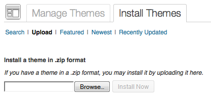
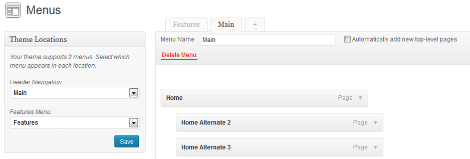
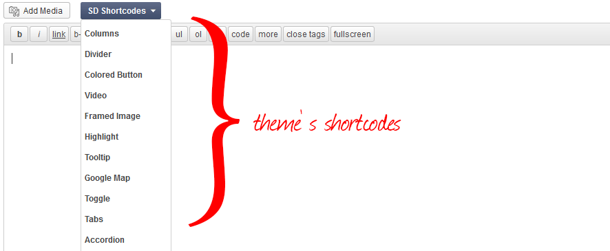

First of all a huge THANK YOU for purchasing Charity. If you have any questions that are beyond the scope of this help file, please don't hesitate to contact me. You can also follow me on Themeforest to keep track of all my theme updates and upcoming themes.
Thanks so much!
Before you start playing around with the theme, let's check what you've downloaded so far:
First of all if you are all new to WordPress, I would recommend to learn a little bit about it before you get started. Here are some nice Resources on how to get started with WordPress.
Here's also a short video of the installation process
The first option how to install this Theme would be to directly upload the charity.zip file via WordPress Theme Uploader.
If you are experiencing any issues during the installation I would recommend to check out this Screencast by Envato
Here's also a short video of the Theme Installation process
The second option how to install this Theme would be the upload via FTP manager. It really dosen't matter which of the two ways you choose, just choose the one you feel more comfortable with.
/wp-content/themesIf you are experiencing any issues during the installation I would recommend to check out this Screencast by Envato
So at this stage you have probably noticed a warning, asking you to install recommended plugins. This is needed to get additional functionality to the theme. Installing that is very simple, you just need to click Begin installing plugins and you will be redirected to the plugin installation page where you can install any Plugin you want and need.
This Theme includes a Demo Data .xml file which allows you to upload some dummy content to your site to help you get started with the Theme and get to know the functionality. Please note, that the .xml file doesn't include images or the slider data. See the slider section & screencast of this documentation on how to set them up.
Be aware that downloading Dummy Content may take a while, depending on the speed of your internet connection!
If you want to change the general Options of the Theme, go to your WordPress Admin Area to Appearance > Theme Options. Here you have a tabbed Navigation where you can change a lot of Options of your new Theme (General, Styling, Typography etc.)
Notice: Before adjusting the different settings, you should first click on the Save Options button, to insert all default data to the database and make sure everything looks good.
Your new Theme comes with some awesome custom page layouts. These layouts can be used on any page you create to give them some special functionalities. To set up a custom page layout go to your WordPress Admin Area and navigate to Pages > Add New. Now you can choose any template you like from the "Page Attributes" on the right side.
All Pages on the Demo Page are created through a combination of shortcodes.
To use one of our pre-designed layouts, just copy and paste our demo code into the Editor of your page. Make sure to paste them in "HTML" Mode (not Visual). Also choose the "Full-Width" Template in the "Page Attributes".Blog
To Set up a Blog go to your WordPress Admin Area and navigate to Pages > Add New. Choose a title like "Blog", set the page template as "Blog" or "Blog Masonry", leave the Editor blank and click the publish button.
Home
To set up the Home Page of your theme go to your WordPress Admin Area and navigate to Pages > Add New. Choose a Title like "Home", select the "Full-Width" Template in the "Page Attribute"s. Add your content or copy one of the codes above, set a Slider (for mor Information see the Slider Section) and click the publish button. Now go to Settings > Reading select "A static page" and choose "Home" for the Front Page.
You have to set up custom menus, for your Navigation to work properly. This Theme comes with a custom menu location at the top of the Page - the "Main Navigation". Go to your WordPress Admin Area and navigate to Appearance > Menus. Now click "add menu". You can display Custom Links, Pages and Categories in your Custom Menu. Once you are finished with your Menu, choose the Menu you just created in the "Theme Locations" Panel for the Main Navigation.
To display an icon right before your menu item go to this page: http://fortawesome.github.io/Font-Awesome/cheatsheet/ choose your icon and copy the text of the icon (eg. fa-search). Now, in the title attribute of your menu item insert "fa" followed by the slected icon text. Eg: fa fa-search.
There are 5 pre-defined sidebar areas that come with this theme - Main Sidebar, Footer Left Sidebar, Footer Middle Sidebar and Footer Right Sidebar. Here you can drop your Widgets. You can also define custom sidebars for each page.
To create Custom Sidebars, follow these steps:
Your new Theme comes with 6 custom widget. All custom widgets are highlighted in blue and can be found in your WordPress Admin Area under Appearance > Widgets. Here you find several areas where you can drop the widgets. In the Footer Area you can drop up to 3 Widgets, which will be displayed next to each other. The "Blog Sidebar" is the sidebar area of the Blog section.
The Revolution Slider plugin is included in this theme. Please check the official Revolution Slider Documentation I've included in this package.
Note: For the homepage slider you'll need to create a slider with the alias "homeslider".
Here's a short video of how to set up home slider
This theme comes with some very useful shortcodes included. Shortcodes are a very powerful way to insert custom functions directly into the main content of a WordPress page or post. You can use them in Blog Posts, Pages and even Widgets and Widget Titles. Just click on a Shortcode Button and adjust the settings, then publish the page.
Once the theme and required plugins are installed you'll need to configure the campaign plugin. You can do this by going to your WordPress dashboard > Campaigns > Settings.
The following shortcodes are used within the theme, for the campaign settings:
You can link any button or text to the donate from by setting it up with this in the place of the URL: #sd-modal-button-form and add it this rel attribute: prettyPhoto.
Frequently Asked Question
Q:Can I use other payment gateways besides the default PayPal?
A:Yes, you can. You can use the following: PayPal Adaptive Payments, Stripe or WePay but note that as I didn't develop any of these plugins you're on your own with further developing and implementation.
Note: While there are other options, they are not used by the Charity theme.
Here's a short video of how to configure the campaign plugin and how to create a campaign:
This theme is translation ready! The translation files .po/.mo are located in framework/lang in the theme's folder.
To translate the theme, simply follow these steps:
I constantly develop new features, so after downloading a new version we recommend to check that everything is correctly translated.
This theme imports some useful Javascript files.
I've used the following images, icons or other files as listed. Isotope and Revolution Slider Plugin (Commercial License) is included, so you don't need to purchase your own license.
Once again, thank you so much for purchasing this theme. As I said at the beginning, I'd be glad to help you if you have any questions relating to this theme. No guarantees, but I'll do my best to assist. If you have a more general question relating to the themes on ThemeForest, you might consider visiting the forums and asking your question in the "Item Discussion" section.
Best Regards,
Chris